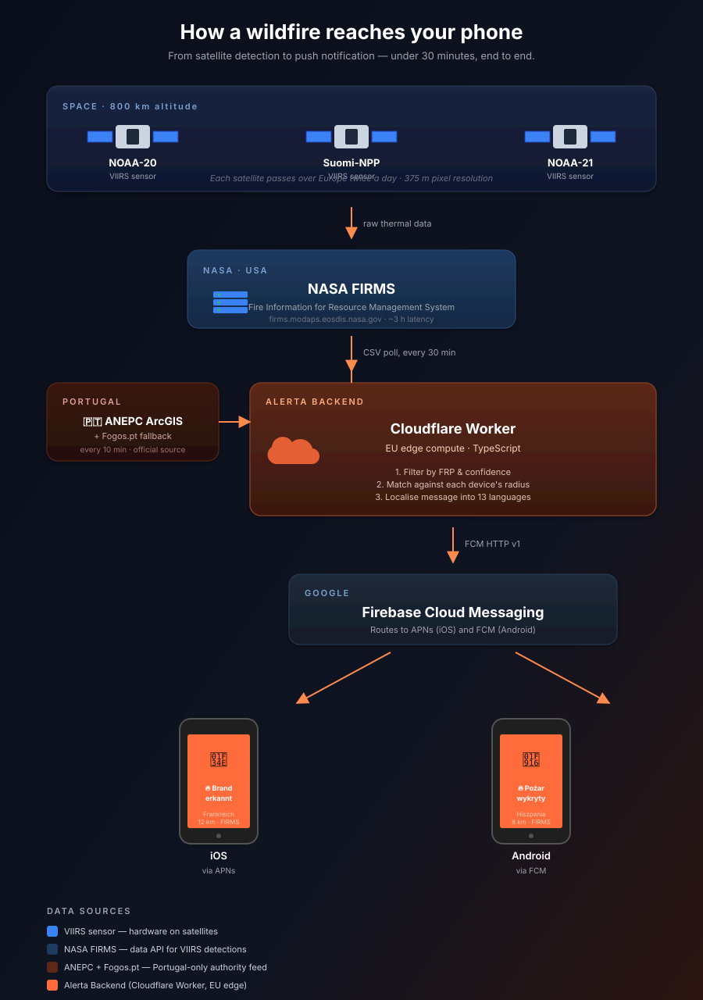

Features
Interactive Map
View fire hotspots on an interactive map with standard, satellite, and NASA VIIRS overlay modes.
Push Notifications
Get alerted when fires are detected near your location. Configure alert radius and intensity thresholds.
Statistics
View fire statistics including intensity distribution, fires by country, and satellite detection data.
NASA FIRMS Data
Real-time fire data from NASA's VIIRS sensors on NOAA-20 and Suomi-NPP satellites.
Fire Weather Index
EFFIS Copernicus fire danger forecast overlay with official 6-class danger scale.
7 Languages
Available in English, German, Spanish, French, Italian, Portuguese, and Greek.
How a wildfire reaches your phone
From satellite detection to push notification — under 30 minutes, end to end. No human in the loop, no manual moderation: NASA satellites detect the fire, our edge worker matches it against your alert radius, Firebase delivers the push.

Data Sources
NASA FIRMS
Fire Information for Resource Management System provides near real-time active fire data from VIIRS and MODIS sensors.
EFFIS Copernicus
European Forest Fire Information System provides fire danger forecasts and the Fire Weather Index.
Requirements
- iOS 18.0 or later
- iPadOS 18.0 or later
- macOS 15.0 or later
Support
Contact
Questions or feedback? Email us at walter.tengler@gmail.com
FAQ
Fire uses NASA satellite data to detect wildfires. Data is typically available within 3 hours of observation. This app is for informational purposes only.